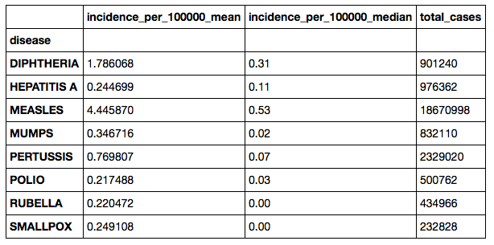
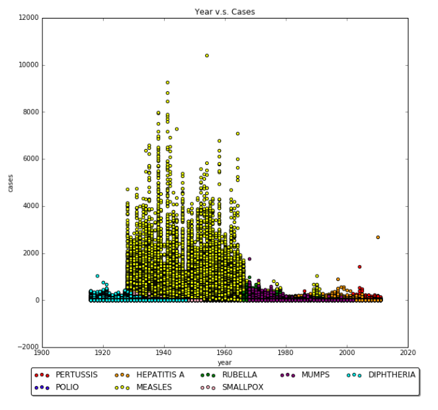

Choose which diseases to display in the check-boxes below, and slide to change the year.
Graphical Analysis

Through graphing out several plots about the data, we spotted one interesting observation. Majority of the diseases occured between 1920 to 1960, with Measles clearly dominating the graph.

What's next?
We originally wanted to predict the migration of the most popular epidemics using LSTM, a Recurrent Neural Network that has the ability to predict time series data. However, the data provided from the google cloud services and various government release datasets do not contain extra information other than the report date and the type of disease recorded. Due to the limitation of time, we decided to abandon the possibility of collecting more features, such as temperature and top news, about each report date. We decided to explore the dataset we currently have in more detail. We extracted the elevation,latitude, longtitude, and population dentity of each location. We currently building a svm classifier and naive bayes classifier which will be able to predict which countries will be able to classify which has a higher chance of exposure to certain epidemic.